비타500의 출시배경
비타500은 발상의 전환이 만들어낸 작품이라고 해도 과언이 아닙니다.
기존 시장에 과립이나, 정제, 빨아먹는 트로치 형태의 비타민 C가 존재하는 상황에서
‘마시는 비타민C’를 생각한
점과, 제약회사가 약국 유통만 해야한다는 고정관념을 버리고
슈퍼, 편의점 등 일반 유통에 과감하게 도전한
점은
기존의 경험과 마인드로 실현하기 쉽지 않는 결정이었습니다.
이러한 발상의 전환으로 비타500은 드링크업계의 대표적인 브랜드로 성장하는 성과를 이루어내었습니다.
비타500의 제품컨셉
2001년 비타500 출시 당시, 기존 비타민 C 시장 강력한 경쟁 브랜드와의 직접적인 경쟁을 피하면서
갈 수 있는 시장이 무엇일까 많은 고민을 끝에 기존 과열 경쟁 시장인 레드오션(Red Ocean)을 피하고
블루오션(Blue Ocean)으로 나아가게 되었습니다. 결국, 치열한 경쟁하는 방법 대신 창조적 사고를 통해
발견한 틈새시장에 출사표를 던졌으며, ‘마시는 비타민C’라는 기능성 드링크 비타500을 출시하게 되었습니다.
‘마시는 비타민C’라는 기능성 드링크의 새로운 시장을 창출하고자 했던 전략은 웰빙 트랜드가 만들어놓은
블루오션(BlueOcean)이라는 아무도 가지 않은 새로운 시장에 진입하여, 순탄한 항해를 하게 된 것입니다.
비타500의 성장과 전략
제품(Product)
수많은 소비자 조사와 제제 연구를 통해 터득한 맛, 400억이 넘는 과감한 투자를 통한 최상의 품질 유지,
좁은 사각지대를 타켓으로 한 제품의 전략적 위치는 시장에 성공적으로 자리잡을 수 있는 요인이자 경쟁력 입니다.
가격(Price)
드링크 소비를 주도하는 젊은 층이 부담없이 마실 수 있는 가격. 그리고 유통점과 상생하고자 했던 우리의 가격 전략을 고려하였습니다. 결국 500원 가격 전략은 불황에 허덕이는 유통점을 동시에 만족시키고,
나아가 웰빙을 추구하는 알들 소비자, 특히 젊은 층을 만족시킬 수 있는 가격이었습니다.
유통(Place)
비타500은 종합적인 유통전략을 채택하여 유통 채널을 확대하였습니다. 젊은 층이 약국/슈퍼나 편의점에서 비타500을 만나고,
중년층은 골프장과 사우나에서 비타500을 만남으로써 친숙한 이미지를 갖게 되었으며, 이러한 유통 확대는 비타500 소비를
주도하는 계층인 20대와 30대 외에 10대와 40대도 크게 증가하는데 기여하고 있습니다.
판촉(Promotion)
발매 초기, 단순히 제품과 브랜드를 알리는 판촉 전략에 주력하다가, 이후 기능성
드링크와 이미지를 홍보해갔으며, 현재는 무방부제, 제품의 기능적 가치와 정서적 가치를
중심으로, 주요 소비자 대상 시장을 선도하는 브랜드로 자리매김을 확고히 하고 있습니다.
다른 제품
더보기
더보기
더보기
더보기
광고포스터
더보기 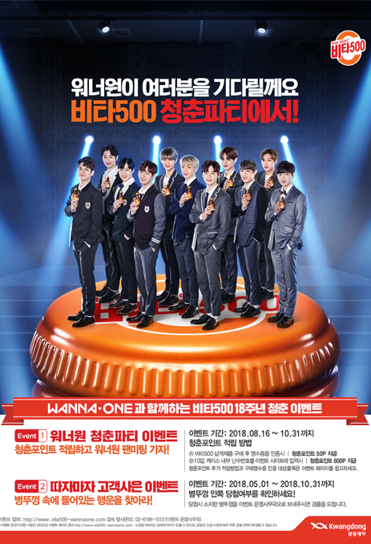
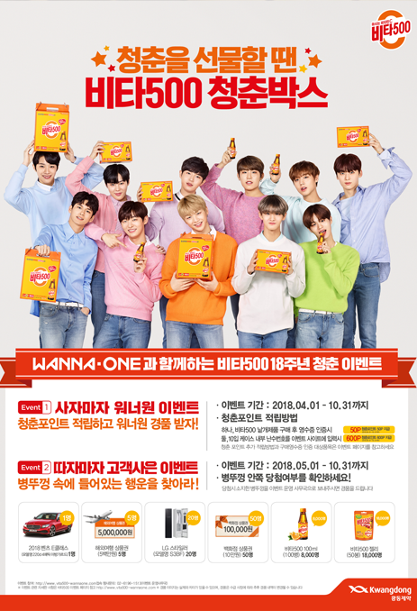
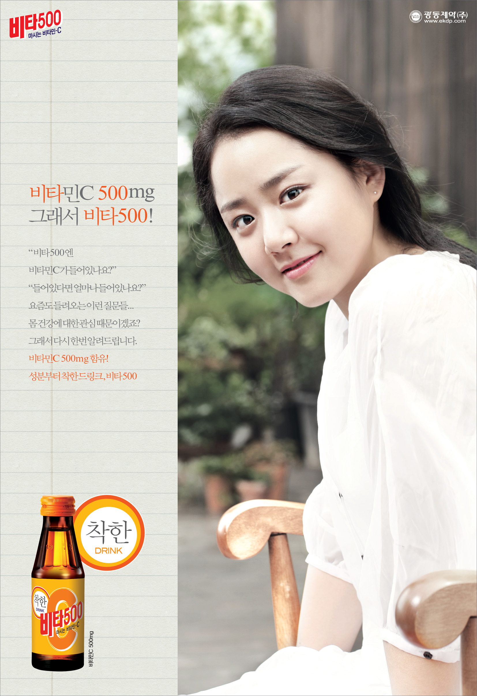
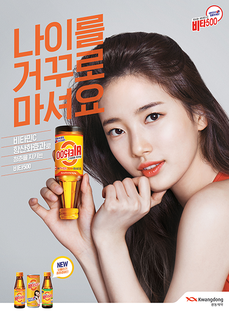
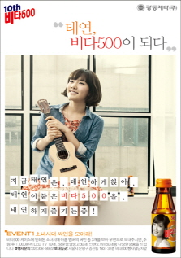
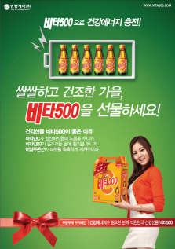
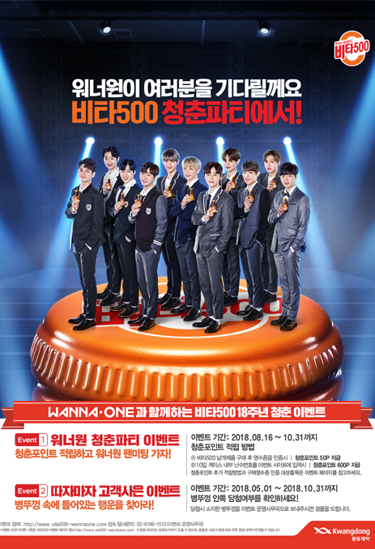
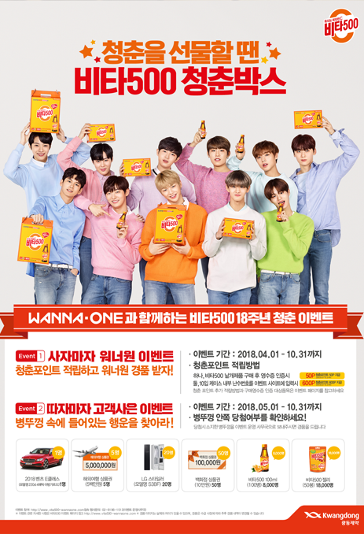
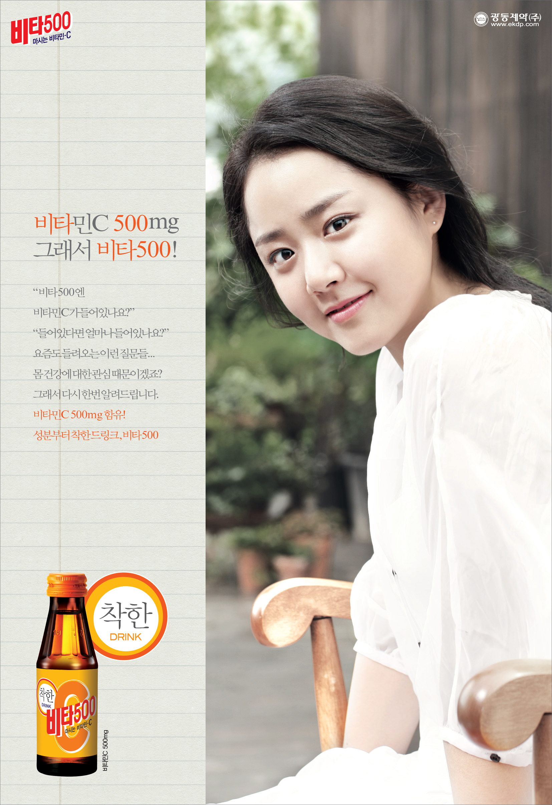
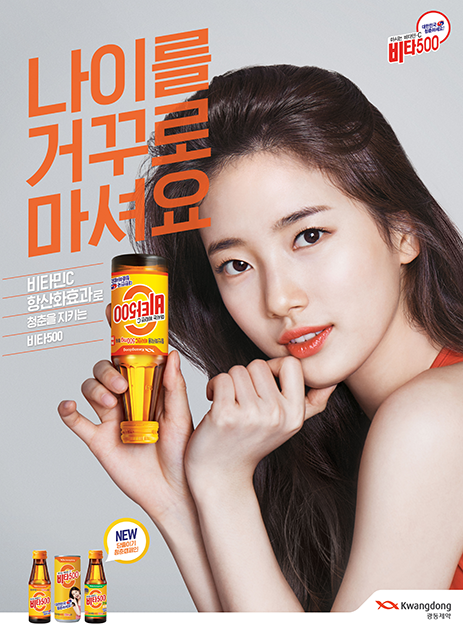
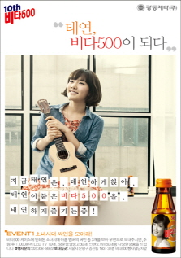
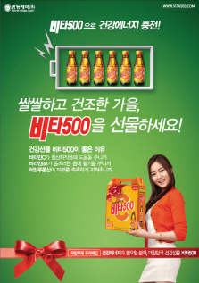
연혁
비타 500과 함께 걸어온 발자취
2019
-따자마자 젊음충전 경품 대축제 이벤트-비타500 × ＇스파이더맨 :파 프롬 홈＇이벤트
-프리미엄 비타500 로열폴리스 출시
-비타500 스파클링 출시
-18회 “꿈꿔라 비타세대, 힘내라” 고3 응원 이벤트 “부산 성일여고”
2018
-비타500 따자마자 이벤트-비타500 X 워너원 청춘파티
-17회 ‘즐겨라 청춘 힘내라 고3’ 응원 이벤트 ‘광주설월고등학교’ 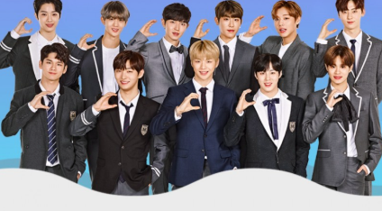
2017
-비타500 젤리 출시-비타500 청춘카페 오픈
-16회 ‘꿈꿔라 청춘! 힘내라 고3!’ 응원 이벤트 “대구 도원고등학교＂ 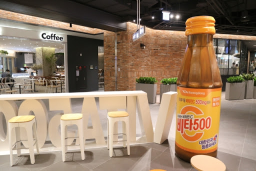
2016
-15회 꿈꿔라 청춘! 힘내라 고3!’ 응원 이벤트 “경북 영천여고” 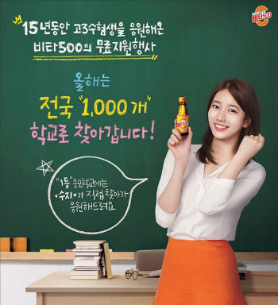2015
-광동제약 비타500 신규 CF 공개 - 기운이 뿅! 활력이 쓩쓩~-제14회, 고3 수험생 수능 대박 기원 프로젝트 "부산영도여고"
-비타500 ACE 출시
-비타500 프리미엄 150ml 출시
-비타500-다음카카오 함께하는 착한 캠페인 "희망해" 1억4천만원모금
-착한선물 착한행운 이벤트 "선물용 비타500 스크래치 이벤트"
-비타500 아이스 출시
2014
-모델 수지 “수험생 여러분, 수지 왔어요!” 깜짝이벤트 진행 :광주 설월여자고등학교-착한 비타500과 다음 희망해가 함께 온라인 캠페인 진행으로 67만명과 따뜻한 마음 나눔
-얼려먹는 비타500 출시
-착한 비타500 수지, 이번엔 “착한 마음 song”
-비타500 수익금으로 백혈병 소아암 어린이 등 지원
2013
-수지, “착한 비타500 들고 수험생 응원 왔어요” 부산동고등학교-광동 비타500, 착한 수지와 기부하세요~
-광동제약 비타500 “참 착하네요 song” 이벤트
-광동제약, 비타 500 어린이들을 위한 사회공헌 캠페인 진행
2012
-“[2012 히트상품] 광동 비타500, 착한 드링크의 역습” 월 4000만병 판매-백혈병소아암협회와 함께 착한 드링크 캠페인 실시
-비타500칼슘 180㎖ 등 제품 5종이 환경부로부터 ‘저탄소제품’ 인증 획득
-소아암 환아들, “고마워요 착한 비타500” 캠페인 진행
2011
-소녀시대와 함께하는 비타민송 UCC이벤트 진행-광동제약, 일반인 대상 비타500 증강현실 체험존 운영
-비타500, 대박! 수능500 수험생 응원 캠페인 진행
-출시 10주년을 맞아 '비타500 나만의 에디션' 이벤트
-대학 신입생 10명에게 '제1회 비타500 장학금' 전달
2010
-대학생들과 함께하는 체험 행사 '비타500 티벳 테마여행' 진행-유이, '건강 비타500, 대박 수능500' 행사 진행 : 부산 동성고등학교
-비타500 생산시설 HACCP•GMP 동시 인증
-비타500 출시 10년만에 25억병 판매
-비타500 탄생 10주년 선물세트 이벤트 실시
더보기
2009
-광동제약, 어린이용 '비타500 키즈' 출시-게임아이템을 100% 지급하는 '비타500 충전100% 게임 이벤트 실시
-‘건강 비타500, 대박 수능 500’ 캠페인 진행
-전 세계 미군부대에 비타500과 광동 옥수수수염차 등 총 19개 제품 납품
더보기
2008
-원더걸스, '건강 비타 500, 만점수능 500' 행사 진행 : 부산동고등학교-기존 스포츠 이온음료에 비타민C를 함유한 ‘비타500 Sports C' 출시
-비타500' 무료증정과 얼음 족탕을 서비스하는 게릴라 이벤트 진행 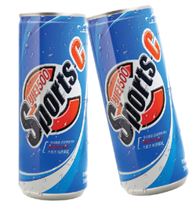
2007
-고3수험생을 대상으로 '비타500 마시고 수능 500점 대박' 행사 진행-광동제약 비타500 15억병 판매 돌파
-산학협동을 통해 비타민C 연구 활성화를 위한 임상연구작업에 돌입
2006
-고3 수험생들을 위한 건강 프로모션 '비타500 마시고 수능 500점 맞고' 캠페인 실시-비타500 월드바스켓볼 챌린지 2006 대회' 후원
-비타500 중국 시장 본격 진출
-방부제와 카페인이 없는 비타500을 출시하면서 ‘따자 마자 한 병 더 페스티벌' 행사 진행
더보기
2005
-비타민음료 '비타500'이 생산량 10억병 돌파-비타500의 병뚜껑을 따면 4가지 행운을 잡을 수 있는
-‘비타500 올4유(All 4 You) 페스티벌’ 행사 진행
-고은아, 비, '건강 비타 500, 만점수능 500' 행사 진행 : 양재고등학교 -비타500 따자마자 대축제 실시
2004
-‘비타500’ 브랜드 사이트 개설… 연 매출 1000억원 달성 기념-‘수험생과 함께하는 비타500 대잔치’ 실시
-전국 주요 피서지에서 해변 마케팅 실시
-광동 '비타500', 출시 4년만에 월 3500만병 판매
-비타 500 美시장 판로확보，500만병 수출
더보기
2003
-‘비타 500’ 360억어치 판매-광동제약, 비타500 '따자마자 대박잔치' 실시 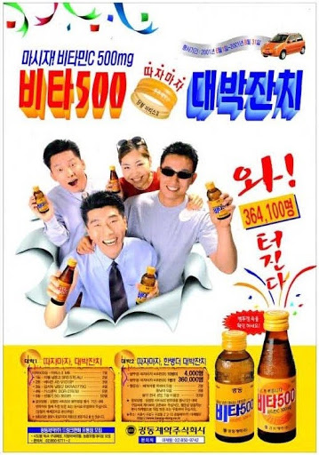